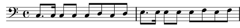

1. [B] Quand tout souriant le nouveau-né donne à sa mère son premier baiser
[TB] Quand l'oiseau de la dernière couvée quitte son nid pour apprendre à voler
[SATB] Le ciel oublie ses nuages, le soleil cache la pluie, ô
[A] La terre oublie son vieil âge, par le printemps rajeuni
2. [A] Quand tout doucement le vent léger porte l'amour à la fleur oubliée
[SATB] Quand main dans la main les fiancés s'en vont bâtir le foyer tant rêvé,
Le monde chante la vie, le monde chante l'amour ô… dans la splendeur des beaux jours
[A] Ah que la terre est jolie dans la splendeur des beaux jours.
3. [SATB] Mon Dieu tu es magnifique, quand tu nous donnes l'été
Combien tu es prolifique, mon Dieu dans tes bontés
[S] Merci à toi qui nous donnes l'espoir des riches moissons
Merci mon Dieu quand l'automne, tu nous combles de tes dons
[ATB] Ah…ou…mm…
4. [B] Quand l'écho des bois a oublié les gais refrains des enfants dispersés
[TB] Quand les feuilles mort' ont tapissé les vieux sentiers des amants séparés
[SATB] Les nids d'oiseaux se balancent dans les arbres décharnés, ô…
[A] Et le ruisseau sans romance sous la neige va pleurer